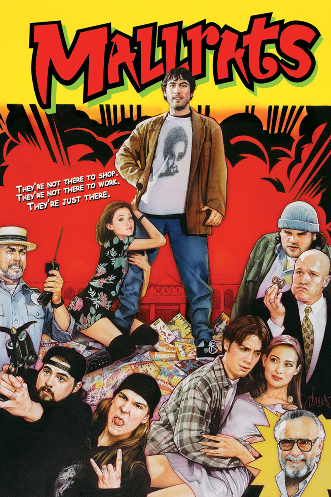
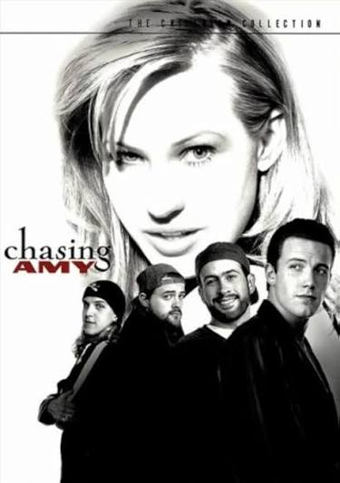
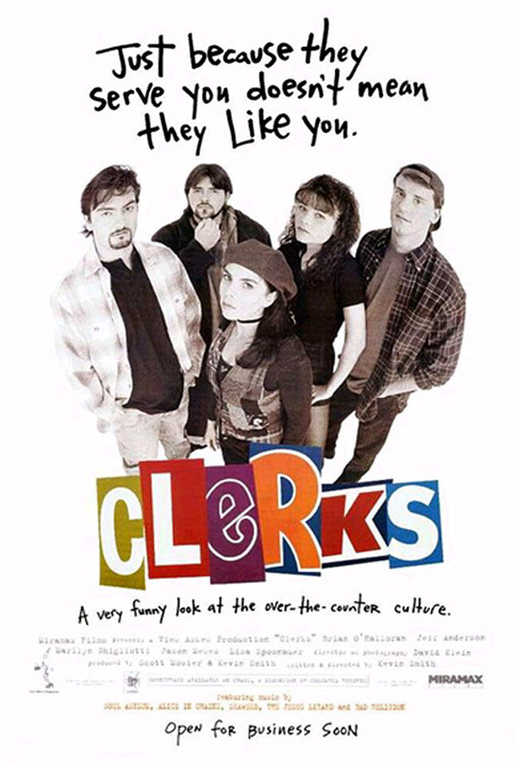
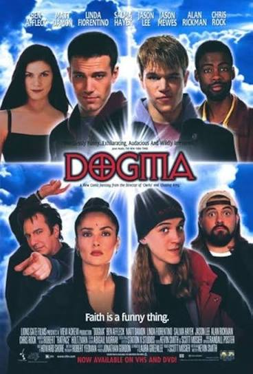
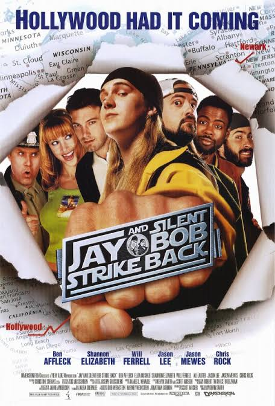
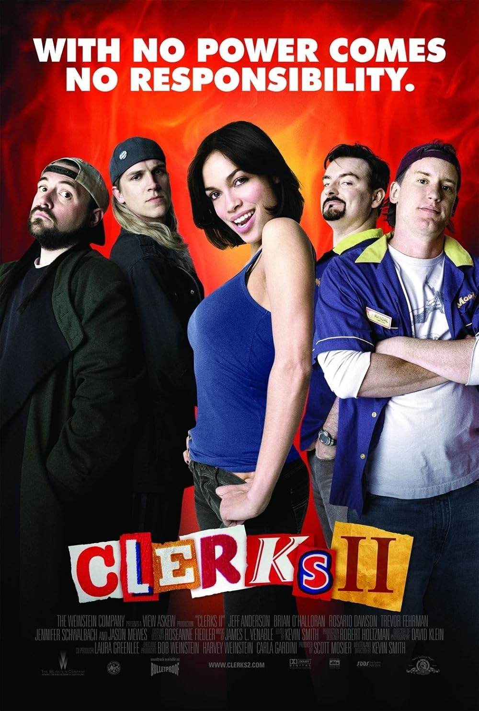

My Favorite Film Collection
This is my curated collection of films that I love. Each of these films have been meaningful to me at various stages of life. Kevin Smith is my favorite filmmaker, and his work has entertained and resonated with me for decades. This collection showcases how responsive design allows me to adapt my content across all screen sizes.

Mallrats
Film | 1995 | Kevin Smith
This is hands down my favorite film. After countless views, it still never fails to entertain me. It explores concepts of love and friendship while maintaining Kevin Smith's raunchy humor. In my opinion, this is where Jay and Silent Bob truly come into their own as characters.

Chasing Amy
Film | 1997 | Kevin Smith
This one hits differently than the others on this list. It trades some of the raunchy comedy for real emotional honesty about jealousy, identity, and falling for someone unexpected. It's the film that showed Kevin Smith could do more than jokes about comic books, and it's still one of his most quietly devastating scripts.

Clerks
Film | 1994 | Kevin Smith
Clerks is the film that started it all. Shot in black and white, Kevin Smith made this film by simply maxing out his credit cards. When filmed, there was no guarantee this film would be at all successful, but it became a cult classic that launched Kevin into a long relationship with Miramax films. The film is raunchy, hilarious, and relatable, as the main characters are simply trying to survive their day-to-day work lives.

Dogma
Film | 1999 | Kevin Smith
Two fallen angels try to exploit a loophole to get back into Heaven, and it's up to a bored abortion clinic worker to stop them. Dogma is easily the most ambitious and controversial film in the collection. Smith was raised Catholic and used the film to mix his own theological ideas with his unique brand of absurdist humor. It's the one I recommend to people who think Kevin Smith only makes movies about guys standing around talking.

Jay and Silent Bob Strike Back
Film | 2001 | Kevin Smith
This film is pure comedy and shameless fan service. Jay and Silent Bob are Kevin Smith's quintessential characters, and this film follows them on a cross-country journey full of needless, but hilarious, callbacks to past films and absurd hijinks.

Clerks II
Film | 2006 | Kevin Smith
The beloved sequel to Smith's first film, Clerks II is hilarious, heartfelt, and had a significantly larger budget than Smith's freshman film. Following Randall and Dante ten years after the first film's completion, they've moved onto new roles in a fast food restaurant. The film contains all the senseless antics of the first, while also still exploring themes such as the evolution of their friendship and the changes that come with growing up.